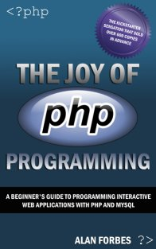

The Joy of PHP book walks you through creating a website for Sam's Used Cars. All the sample code in the book is conveniently created here. To get started, you'll need to make sure that you have PHP and mySQL running on your machine. Here are the links to get started.
| Prerequisites | Free Code Editors |
|
PC Users: Download WAMP Mac Users: Download XAMP
|
Programmer's Notepad is a good all purpose editor Dev-PHP is a PHP-specific editor TextWrangler is a good editor for the Mac. |
Is PHP Running on my machine? Check it here --> http://localhost
A really simple PHP page --> simple.php
Create the Cars Database (Before you can use this, you'll need to edit line 8 with your username and password)
Modify the Inventory Table (This script adds the Primary_Image column. Again, edit line 8 with your username and password)
Create the Images Table (Again, edit line 8 with your username and password)
